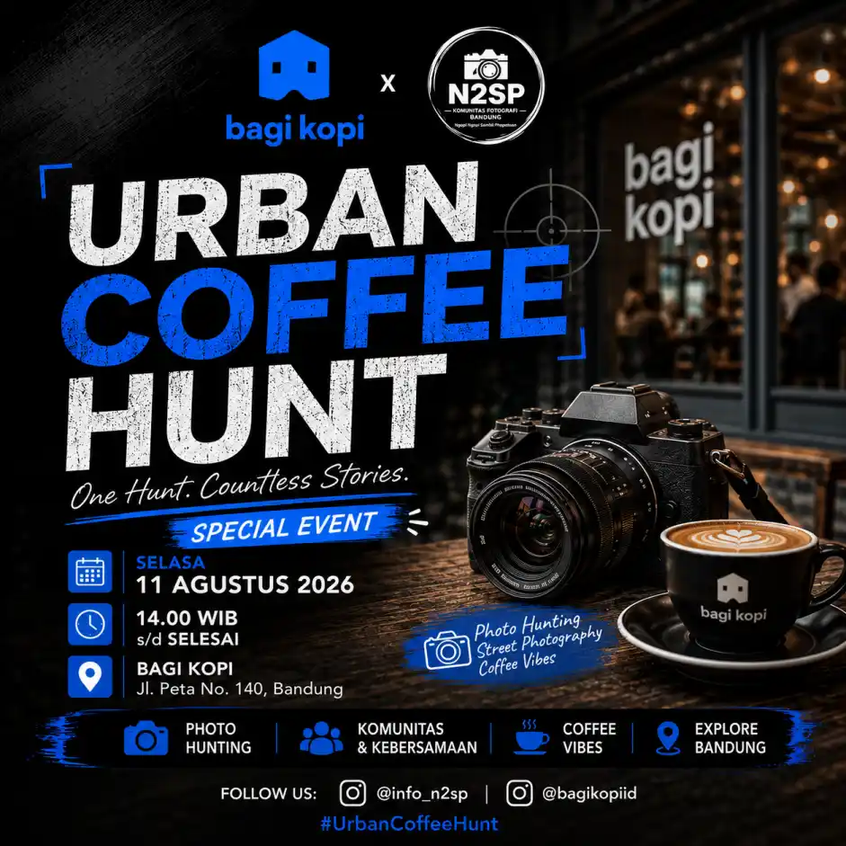

One Hunt, Countless Stories: Fotografi, Komunitas, dan Coffee Vibes

Suasana berbeda terasa di Bagi Kopi, Jalan Peta No. 140, Bandung, pada Selasa, 11 Agustus 2026. Puluhan fotografer berkumpul dalam kegiatan Urban Coffee Hunt 2026, sebuah event yang memadukan fotografi, eksplorasi visual, komunitas, dan suasana santai ditemani secangkir kopi.
Kegiatan ini merupakan kolaborasi Bagi Kopi x N2SP Komunitas Fotografi Bandung. Mengusung semangat "One Hunt. Countless Stories.", Urban Coffee Hunt menjadi ruang bagi para fotografer untuk berburu momen, mengeksplorasi kreativitas, sekaligus mempererat hubungan antaranggota komunitas.
Event ini berlangsung meriah dengan kehadiran sekitar 30 fotografer yang datang dari berbagai latar belakang. Para peserta tidak hanya membawa kamera dan perlengkapan fotografi, tetapi juga semangat untuk belajar, berbagi pengalaman, serta menghasilkan karya visual bersama.
Keseruan kegiatan semakin lengkap dengan kehadiran 5 orang model yang mengikuti sesi pemotretan. Kehadiran para model memberikan kesempatan kepada fotografer untuk mengeksplorasi berbagai konsep mulai dari portrait photography, lifestyle photography, street portrait, hingga konsep visual dengan nuansa coffee shop.
Berbeda dengan kegiatan hunting foto di ruang terbuka, Urban Coffee Hunt menawarkan pengalaman fotografi dengan atmosfer khas kedai kopi. Interior, meja, kursi, bar kopi, cahaya ruangan, hingga aktivitas pengunjung menjadi bagian dari elemen visual yang dapat dimanfaatkan oleh para fotografer.
Para peserta bebas mencari sudut terbaik dan menerjemahkan suasana Bagi Kopi melalui gaya fotografi masing-masing. Satu lokasi yang sama dapat menghasilkan banyak interpretasi berbeda tergantung bagaimana fotografer memilih komposisi, angle, pencahayaan, dan momen.
Salah satu bagian yang paling menarik perhatian peserta adalah sesi portrait bersama 5 model. Sesi ini memberikan ruang bagi fotografer untuk mengasah kemampuan dalam mengarahkan model, menentukan pose, memilih background, serta memanfaatkan available light.
Nuansa coffee shop juga menjadi bagian dari konsep pemotretan. Interaksi model dengan lingkungan sekitar, elemen kopi, interior, serta aktivitas di dalam kedai dapat dikembangkan menjadi cerita visual yang lebih natural.
Urban Coffee Hunt tidak membatasi peserta pada satu gaya fotografi tertentu. Setiap fotografer memiliki kesempatan untuk mengeksplorasi karakter visual sesuai dengan kreativitas dan gaya masing-masing.
Ada yang fokus pada portrait, ada yang mengejar candid moment, sementara fotografer lainnya memanfaatkan interior dan detail coffee shop sebagai bagian dari komposisi. Perbedaan pendekatan inilah yang membuat satu kegiatan dapat menghasilkan begitu banyak cerita visual.
Selain menghasilkan foto, Urban Coffee Hunt juga menjadi ruang untuk memperkuat kebersamaan di antara para fotografer. Sesi hunting berlangsung dalam suasana yang santai, sehingga peserta dapat saling berkenalan dan bertukar pengalaman.
Berbagai obrolan mengenai kamera, lensa, teknik pemotretan, pose model, komposisi, editing, hingga pengalaman mengikuti kegiatan fotografi menjadi bagian dari interaksi peserta.
Bagi fotografer yang baru bergabung dalam komunitas, kegiatan seperti ini juga menjadi kesempatan untuk mendapatkan pengalaman langsung sekaligus mengenal fotografer lain yang memiliki minat serupa.
Salah satu keunikan Urban Coffee Hunt adalah perpaduan antara kegiatan fotografi dengan pengalaman menikmati kopi. Setelah berburu foto, peserta dapat bersantai, menikmati suasana Bagi Kopi, dan berbincang bersama sesama anggota komunitas.
Kopi tidak hanya menjadi pelengkap acara, tetapi juga menjadi bagian dari konsep visual. Gelas kopi, latte art, meja kayu, suasana kedai, dan kamera menjadi elemen yang memperkuat identitas Urban Coffee Hunt.
Salah satu hal menarik dari kegiatan ini adalah bagaimana sekitar 30 fotografer dapat menghasilkan perspektif yang berbeda meskipun berada di lokasi yang sama.
Setiap fotografer memiliki cara sendiri dalam melihat sebuah momen. Ada yang mengutamakan ekspresi, permainan cahaya, detail, warna, maupun storytelling. Perbedaan perspektif tersebut membuat Urban Coffee Hunt menjadi sebuah perjalanan visual yang penuh cerita.
Urban Coffee Hunt menjadi salah satu bentuk kolaborasi yang mempertemukan dunia coffee shop dan komunitas fotografi. Bagi Kopi menjadi ruang berlangsungnya kegiatan, sementara N2SP Komunitas Fotografi Bandung menghadirkan semangat komunitas, kreativitas, dan fotografi.
Kolaborasi seperti ini membuka peluang bagi komunitas fotografi untuk terus menghadirkan kegiatan kreatif yang tidak hanya berorientasi pada hasil foto, tetapi juga membangun relasi dan pengalaman bersama.
Urban Coffee Hunt 2026 menjadi sebuah pertemuan yang penuh energi positif. Kehadiran sekitar 30 fotografer dan 5 model membuat kegiatan berlangsung semakin hidup dan berwarna.
Lebih dari sekadar hunting foto, event ini menjadi ruang untuk belajar, berbagi, berjejaring, menikmati kopi, dan menciptakan cerita melalui kamera.
Dari sebuah kamera, secangkir kopi, dan pertemuan para pegiat fotografi, lahirlah puluhan perspektif dan cerita yang berbeda. Itulah semangat Urban Coffee Hunt: One Hunt, Countless Stories.
"One Hunt, Countless Stories."
🎬 Watch the Official Aftermovie — Urban Coffee Hunt 2026